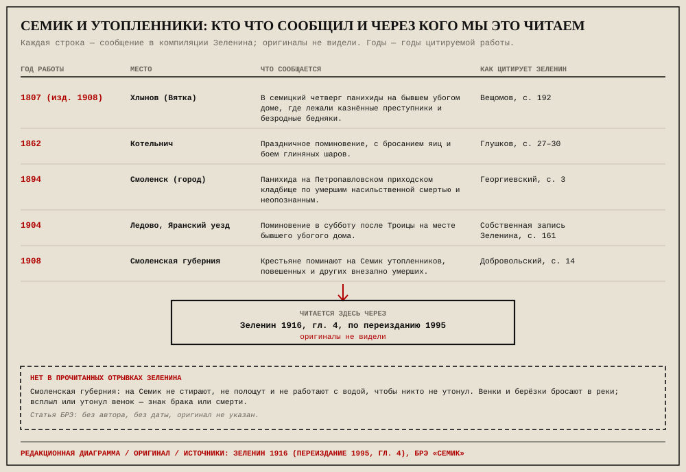

ТОМ II · ЛИСТ O · 03 / 06
ВОДА, БОЛОТО И РЕКА
Где поминали утонувших и где болото стояло между мирами
В источниках, прочитанных для этого листа, вода — место утонувших, а болото — граница. Календарный день поминал умерших в воде; эссе читает болото как порог. Лист держит датированный обычай и толкование порознь.
Обычаи записаны в XIX–XX вв.; эссе 2022 г. · Вятская, Смоленская и другие губернии (сообщения о Семике); Россия и соседние народы (эссе) · Восточнославянский народный обычай; сравнительная мифология
O / 01
Край между
Эссе Ольги Лавреновой читает болота в мифопоэтической картине мира народов России как пограничный ландшафт. Болото соединяет воду и сушу, не будучи ни тем, ни другим, и во многих её примерах оно же — место, куда уходят души и где живым грозит опасность. Болотные духи утаскивают людей или заманивают в трясину, а кикимора в некоторых рассказах — девушка, утонувшая в болоте.
Эссе — гуманитарное рассуждение на вторичных сборниках, у которого нет заявленного способа отбора примеров. Оно ходит по славянским, финно-угорским, тунгусским, тюркским и другим народам, так что отдельную деталь нельзя считать русской. Оно говорит, что может значить болото в этих традициях. Оно не говорит, что делала какая-либо семья, когда кто-то тонул.

O / 02
Утонувшие в Семик
Онлайн-статья Большой российской энциклопедии о Семике, четверге седьмой недели после Пасхи, описывает его как время поминовения умерших без покаяния и погребения: утонувших, повешенных, жертв насилия и неопознанных. Там же сказано, что в Вятке день отдавали утонувшим и кладбищенские трапезы становились шумными; прочитанные для этого листа места из Зеленина этого не подтверждают и связывают Вятку с местами убогих домов (ниже). В Смоленской губернии в этот день не мыли, не полоскали и не работали с водой, чтобы никто в семье не утонул. Венки и берёзки бросали в реки, и в некоторых прочтениях то, плывёт венок или тонет, предвещало замужество или смерть.
У Зеленина для Смоленской губернии есть более ранняя запись. Крестьяне там, пишет он, поминали в Семик утонувших, повешенных и других умерших внезапно; он ссылается на Добровольского (1908, с. 14). Второе сообщение, на которое он ссылается, Георгиевского (1894, с. 3), описывает панихиду на Петропавловском приходском кладбище в городе Смоленске по умершим насильственной смертью и оставшимся неопознанными. Запрета на работу с водой в прочитанной части Зеленина нет; для него у листа есть только энциклопедия.
Статья анонимна и без даты и называет регионы, не цитируя первоначальных записей. Лист принимает их как сообщения, которые надо проверить, а не как законченный обзор.
O / 03
Ямы для невостребованных
В той же статье сказано, что неопознанные и невостребованные тела когда-то клали в открытые общие ямы, скудельницы, и хоронили вместе в Семик. Поминовение происходило на кладбищах и на местах этих «убогих домов». Добавлено, что Екатерина II запретила хоронить в них в 1771 году.
Вятский материал Зеленина посвящён именно этим местам. Он ссылается на Вещомова (написано в 1807 году, издано в 1908, с. 192): панихиды в четверг Семика на месте бывшего погребения в убогом доме в Хлынове, то есть в городе Вятке, где хоронили казнённых преступников и невостребованных бедняков. Глушков (1862, с. 27–30) описывает праздничное поминовение в Котельниче с бросанием яиц и глиняных шариков. Собственная запись Зеленина 1904 года (с. 161) помещает поминовение в Ледове Яранского уезда в субботу после Троицы на месте бывшего убогого дома. Это сообщения в сводке, привязанные к названному месту и, в оригинале, к названному собирателю; оригиналов здесь не видели.
Это запись об учреждении, месте и дате. Здесь она полезна тем, что показывает календарный обычай, привязанный к физическому устройству для мёртвых, у которых не было семьи, чтобы их похоронить. О реках она ничего не говорит.
O / 04
Вода в трёх видах источников
| Источник | Вид свидетельства | Что он может подтвердить |
|---|---|---|
| Энциклопедическая статья о Семике | Региональные сообщения о календарном обычае | Что в некоторых местах утонувших поминали в определённый день и в этот день избегали воды |
| Лавренова, 2022 | Интерпретативное эссе, многие народы | Что в этих традициях болото можно читать как границу и путь мёртвых |
| Зеленин, 1916 (глава 4 о Семике, по изданию 1995 года) | Сводка со ссылками на названные местные сообщения (Добровольский, Вещомов, Глушков, Георгиевский) | Что поминовение утонувших и неопознанных в Семик записано для Смоленска и, у мест убогих домов, для Вятки; и что умершим «неестественною» смертью отводили место в водах, болотах и чащах |



Аппарат источники · связанные листы · термины
Источники этого листа
- bre-semik Большая российская энциклопедия (онлайн-версия), неподписанная статья — Семик (n.d.)
- lavrenova2022 Лавренова, Ольга — On the Borderline of the Worlds: Swamps in the Mythopoetic World Picture of the Peoples of Russia (2022)
- zelenin1916 Зеленин, Дмитрий К. — Очерки русской мифологии. Вып. 1: Умершие неестественною смертью и русалки (1916)
Ссылки, даты обращения и ограничения — в списке источников.